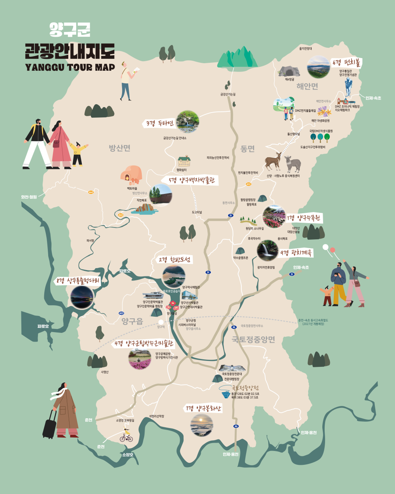

“자연이 준 선물, 로얄(Royal) 곰취의 깊은 향연속으로!”
양구의 청정 자연 속에서 자라난 명품 곰취를 오감으로 경험하는 힐링 축제입니다.
양구 곰취는 해발 고도가 높고 일교차가 큰 DMZ 인근의 깊은 산자락에서 깨끗한 공기와 맑은 물을 먹고 자라납니다. 이 덕분에 잎이 매우 부드럽고 특유의 은은하고 깊은 향이 나며, 비타민 C와 섬유질이 풍부하여 면역력 강화와 피로 회복에 탁월합니다. 양구군이 자부하는 최고의 명품 농산물, 그것이 바로 '로얄 곰취'입니다.
2026. 5. 2(토) ~ 5. 5(화) [4일간]
강원특별자치도 양구군 레포츠공원 일원
자연의 품격, 양구 로얄 곰취의 귀환!
다양한 연령층이 함께 즐길 수 있는 오감 만족 체험과 신나는 무대가 준비되어 있습니다.
매일 10:00 - 16:00 (사전 신청 및 현장 접수)
전문가의 안내를 받으며 청정 밭에서 싱그럽고 은은한 향의 곰취를 직접 손으로 채취하고 한 팩 담아갈 수 있는 대표 힐링 프로그램입니다.
매일 11:30, 14:30 (하루 2회)
남녀노소 다 함께 떡메를 내리치며 전통 방식으로 곰취 찰떡을 완성하고, 갓 지어 부드럽고 쫄깃한 고소한 떡을 현장에서 즉석 시식합니다.
상설 운영 (09:30 - 18:00)
'캐치! 티니핑' 테마의 대형 팝업 놀이터와 대형 에어바운스, 이동식 동물원 등이 설치되어 아이들에게 잊지 못할 추억을 선물합니다.
매시간 정각 운영 (선착순 현장 접수)
향긋한 곰취 페스토를 곁들인 웰빙 피자와 천연 곰취 아이스크림을 직접 만들어 보며 아이들의 오감을 자극하는 요리 수업입니다.
5월 2일(토) 18:30 - 21:00
축제의 화려한 시작을 알리는 개막식과 유명 가수들이 총출동하는 특집 라이브 무대로 양구의 밤하늘을 뜨겁게 수놓습니다.
5월 3일(일) 19:00 - 20:30
인기 인디 밴드와 어쿠스틱 뮤지션들이 선보이는 감성 버스킹과 퓨전 국악 공연으로 낭만적인 음악 쉼터를 선사합니다.
5월 4일(월) 13:00, 16:00 (하루 2회)
아이들의 우상! 티니핑 캐릭터 친구들이 무대 위에서 직접 신나는 노래와 춤을 보여주는 특별 싱어롱 콘서트와 포토타임.
5월 5일(화) 15:00 - 18:00 (폐막식 포함)
치열한 예선을 뚫고 올라온 양구 군민과 방문객들이 펼치는 유쾌하고 열정적인 노래 자랑 대회 및 풍성한 시상식.
매일 11:00 - 20:00 (다회용기 제공)
축제 최고의 하이라이트! 갓 딴 신선한 곰취 잎을 현장에서 구매해 야외 바베큐 존에서 노릇노릇한 삼겹살과 함께 싸서 먹는 황홀한 먹거리 존입니다.
상설 운영 (09:00 - 19:00)
양구 농가에서 직접 수확한 프리미엄 곰취 잎사귀뿐만 아니라 시래기, 사과, 아스파라거스 등 우수한 청정 농산물을 유통 단계 없이 산지 직송 가격으로 구매하세요.
상설 운영 (10:00 - 21:00)
양구군 부녀회와 지역 상인들이 협업하여 곰취 모듬전, 곰취 전병, 곰취 도토리묵 무침, 곰취 찐빵 등 향긋한 풍미가 깃든 특색 있는 향토 음식을 선보입니다.
매일 12:00 - 19:00 (성인 인증 필수)
양구의 전통 양조 기술로 빚어낸 곰취 생막걸리를 무료 시음하고, 은은한 풀 향과 청량한 탄산이 조화를 이루는 명품 전통주를 특별 할인가에 만나보세요.
하늘에서 떨어지는 싱싱한 로얄 곰취를 20초 안에 최대한 많이 바구니로 받아 채취해 보세요!
시든 잎사귀나 독초(잡초)를 획득하면 점수가 깎이니 주의해야 합니다!
💡 데스크톱: 키보드 좌우 화살표 키 또는 마우스 이동 | 모바일: 화면 하단 좌우 터치 패드 또는 슬라이드
축제에서 맛볼 수 있는 향긋한 곰취 요리들입니다. 카드를 클릭해 상세 레시피와 꿀팁을 확인해 보세요!
바삭하게 구운 고소한 삼겹살과 알싸하면서도 향긋한 생 곰취의 환상적인 하모니.
레시피 보기 →살짝 쪄내 한결 부드러워진 곰취 잎에 매콤달콤한 특제 약고추장 밥을 담아낸 한 입 별미.
레시피 보기 →곰취 잎을 통째로 올리거나 다진 채소와 버무려 바삭하고 고소하게 구워낸 전.
레시피 보기 →찰기 가득한 찹쌀에 생 곰취 잎을 가득 빻아 넣어 씹을수록 향긋함이 퍼지는 쫄깃한 떡.
레시피 보기 →천연 암반수와 양구 곰취 추출물을 발효시켜 만든 청량하고 목 넘김이 상쾌한 전통 약주.
레시피 보기 →양구 레포츠공원에서 자연과 함께 기다리고 있겠습니다.
강원특별자치도 양구군 양구읍 서천리 267 (레포츠공원 일원)
서울양양고속도로 → 춘천IC → 배후령터널 → 양구송청삼거리 → 레포츠공원 (약 1시간 50분 소요)
동서울터미널 또는 춘천시외버스터미널 → 양구시외버스터미널 하차 (도보 15분 또는 택시 3분 거리)
용산/청량리역 → 남춘천역 하차 → 춘천역 버스환승 또는 춘천터미널에서 양구행 버스 탑승

축제 부스 참여, 공연 관련 제안, 단체 버스 대절 예약 등 축제 관련 궁금한 사항을 적어 전송해 주세요.